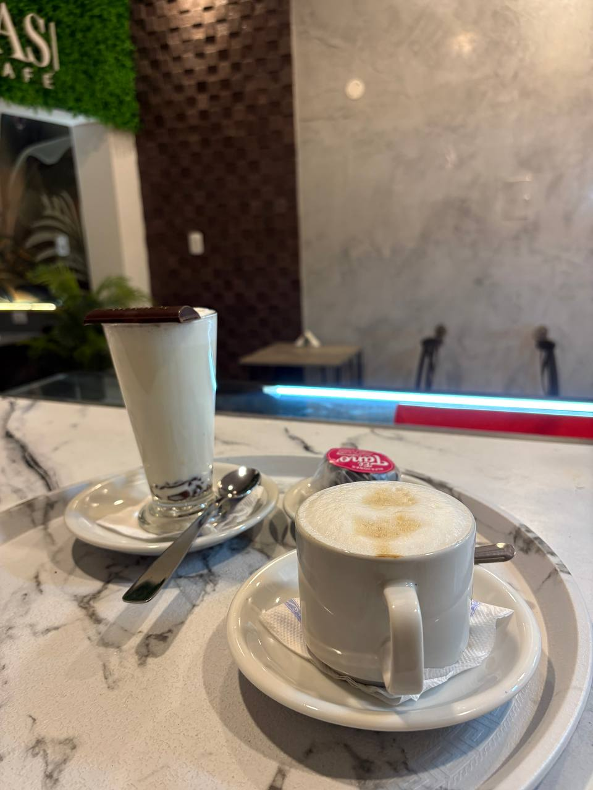
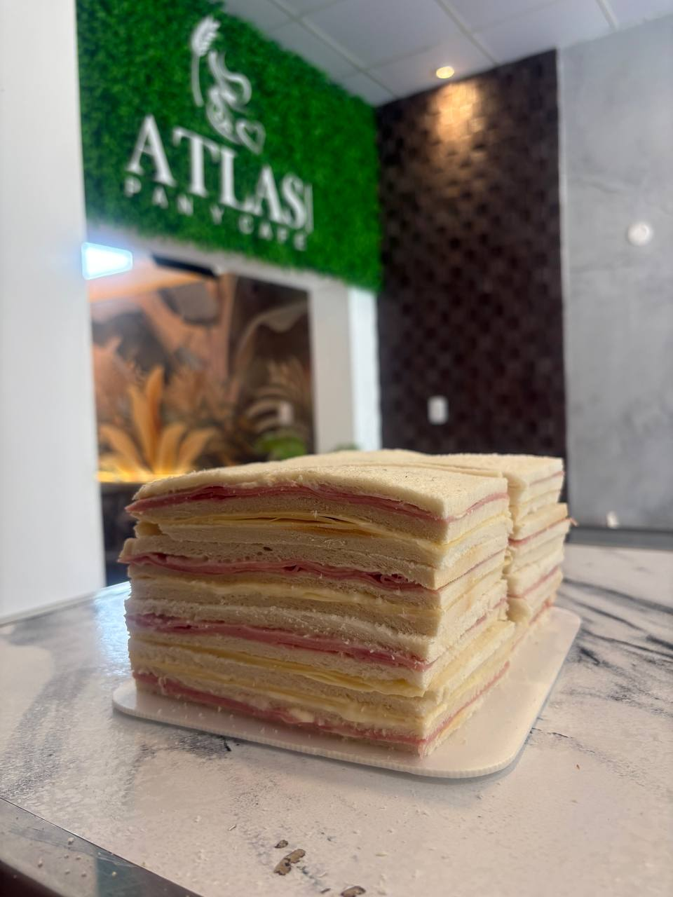
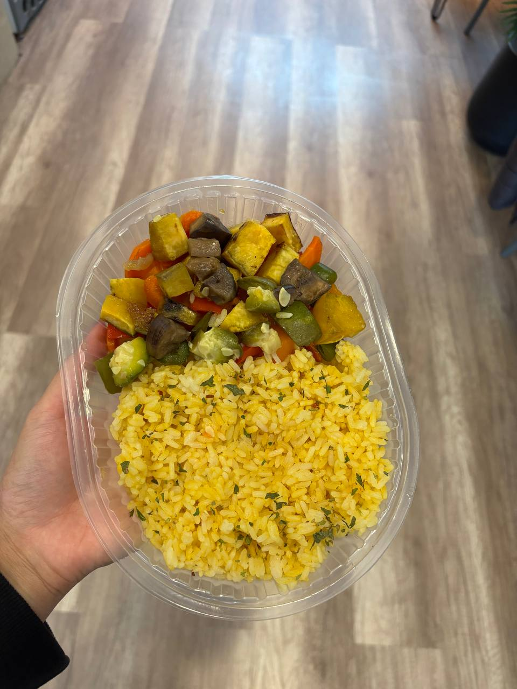
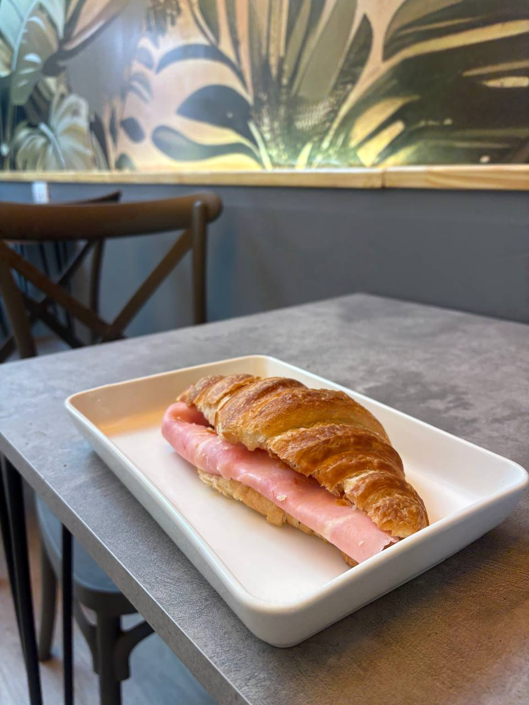

Los 5 Pilares ATLAS

Cafetería de Especialidad
Microespuma densa, cristaleria impecable.

Pastelería de Exhibición
Cortes perfectos y decoración artesanal.

Sándwiches de Miga
Volumen, frescura y bloques perfectos.

Viandas
Saludable, balanceado y sabroso.

Facturas
Facturas
Ver todos los productos